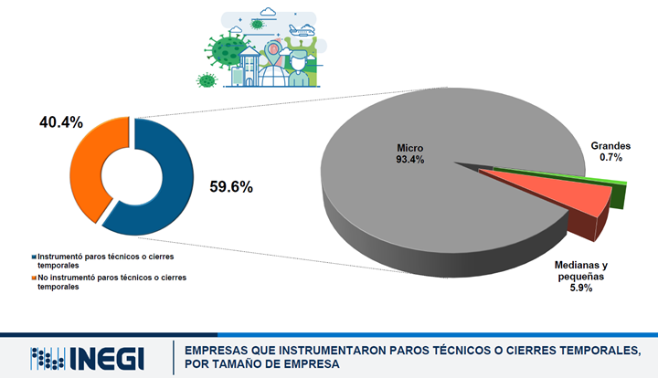
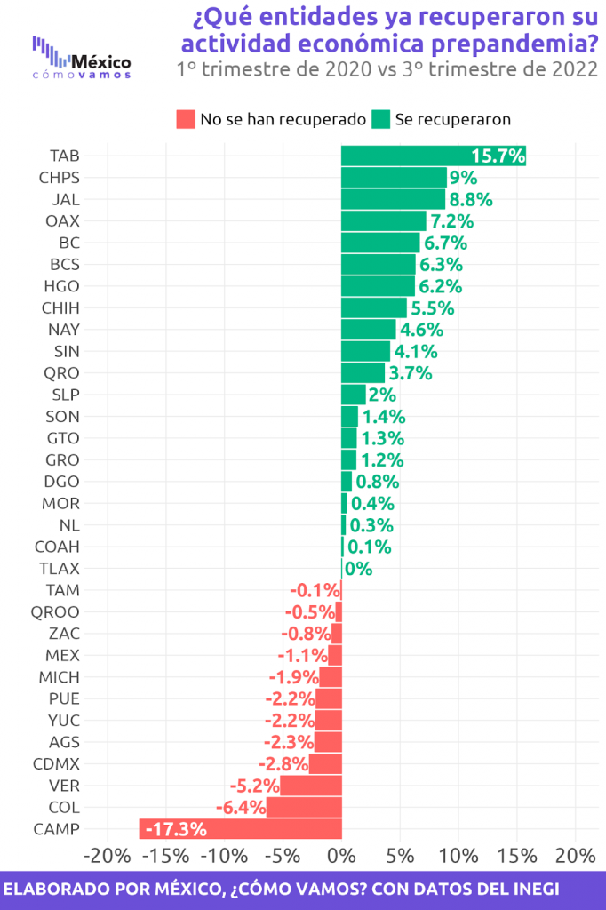
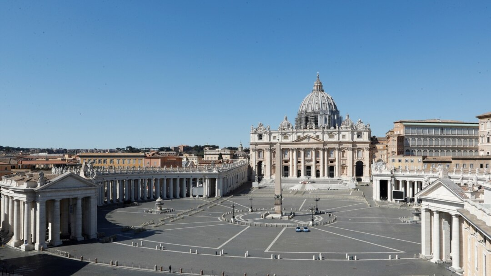
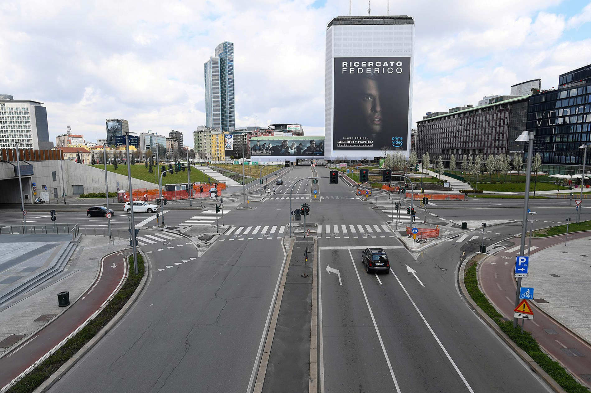

-IMPACTO DE LA PANDEMIA EN EL SECTOR ECONOMICO EN MEXICO-

El impacto de la pandemia sobre la actividad económica en México ha sido muy significativo.
La magnitud y características de dicho impacto pueden identificarse en tres fases o etapas
distintas. Por un lado, se tuvo un primer efecto a fines del primer trimestre de 2020 derivado
del cierre de varios países y de la correspondiente cancelación de vuelos a nivel mundial.
Esto representó un enorme choque negativo en marzo en aquellas entidades y regiones del
país orientadas a las actividades turísticas como Quintana Roo y Baja California Sur. El inicio
del confinamiento en países asiáticos y europeos también se reflejó en las primeras
disrupciones importantes en los procesos productivos asociados a las cadenas globales de
valor de algunos sectores manufactureros.
En una segunda instancia, la actividad económica en el país se desaceleró
significativamente como resultado de la decisión de suspender todas aquellas actividades
consideradas como no esenciales (“Jornada nacional de sana distancia”). Esta decisión
inevitablemente afectó a varios sectores manufactureros y de servicios que debieron cerrar
temporalmente para garantizar el distanciamiento social. Esta fase tuvo su manifestación más
importante en los meses de abril y mayo, aunque en varios sectores se extendió incluso hasta
el mes de junio y en algunos otros aún sigue vigente. Es importante señalar que a fines de
mayo algunos sectores importantes como la minería, la construcción y las industrias
automotriz y aeroespacial pasaron de ser considerados como actividades no esenciales a ser
definidas como esenciales. La reapertura de estos sectores a partir de junio fue, en un inicio.
relativamente limitada, derivada del hecho de que fue necesario hacer ajustes y preparativos
logísticos para garantizar condiciones de sanidad apropiadas en los centros de trabajo.
-IMPACTO SOBRE EL GASTO Y EL CONSUMO-
De manera paralela al impacto sobre la actividad económica, el gasto de las personas también
se ha visto afectado. Esta afectación ocurre por dos vías: oferta y demanda. Por el lado de la
oferta, porque muchas cosas que podrían querer consumir los individuos se encuentran
cerradas o fuera de servicio por razones sanitarias (restaurantes, entretenimiento, etc.). Por el
lado de la demanda, porque la menor actividad económica se traduce a su vez en pérdida o
disminución de ingresos, lo que reduce el consumo de muchos tipos de bienes. En esta
sección describiremos brevemente el impacto de la pandemia y el confinamiento sobre los
niveles de gasto y consumo que se han observado en México. En cuanto a los sectores más afectados por el cambio en los niveles de consumo, han sido los relacionados al turismo, al transporte y al consumo en restaurantes o servicios de comida
rápida. A finales de julio, estos tres tipos de gasto aún se encuentran entre 60% y 70% por
debajo de lo que se esperaría. Los únicos sectores que ya recuperaron por completo sus
pérdidas son los relacionados a Salud, Aseguramiento y Telecomunicaciones. En general, sin
embargo, la tendencia del gasto a retornar a sus niveles previos a la pandemia es bastante
generalizada y constante
-ESTADOS QUE SUFRIERON POR LA PANDEMIA-

Si bien la pandemia impactó fuertemente a la economía, esta ya mostraba debilidad antes de la crisis sanitaria; en el tercer trimestre de 2018 la actividad económica alcanzó un pico, y subsecuentemente inició una trayectoria descendente. A partir del segundo trimestre de 2019 se observaban tasas anuales de crecimiento negativas, por lo que en 2019 la economía se contrajo (-)0.2% anual, y en el primer año de la pandemia mostró una caída pronunciada de (-)8.2% anual.
Después de la fuerte contracción registrada en el segundo trimestre de 2020, la economía mexicana mostró un crecimiento constante en los cuatro trimestres posteriores. Sin embargo, en el 3T2021 presentó una disminución de (-)1.1% a tasa trimestral. Esta contracción alejó a la economía de la esperada recuperación.
¿Qué estados ya se recuperaron ante el impacto de la pandemia?
La recuperación en cada estado es diferenciada y, aún así, una mejor recuperación y mayor crecimiento no se traducen de manera automática en mayor bienestar. Así, destaca el caso de Tabasco, el cual mantiene el mejor desempeño en su recuperación económica postpandemia y es el quinto estado con la tasa de crecimiento anual más alta (7.7%) al 3T2022. Sin embargo, se encuentra entre los 10 estados con mayor informalidad y pobreza laboral, y menor progreso social
-PAISES AFECTADOS-
-Estados Unidos y países del Euro:
son dos de las zonas que más verán los efectos de la recesión, especialmente a nivel inflacionario. También se espera que, debido a las condiciones climatológicas actuales y que empeoran a medida que avanza el cambio climático, en 2023 empiecen a escasear ciertos alimentos.
-Inglaterra:
podría ser el territorio más afectado por la recesión, principalmente porque es la región con mayor actividad económica. Según algunas previsiones de expertos de brókers como easymarkets.com, 2023 será un año mayoritariamente malo para las empresas que cotizan en la Bolsa de Londres.
-China, Corea del Sur y Japón:
potencias asiáticas se verán seriamente afectados en 2023 por la recesión económica. De hecho, ya durante el último trimestre de 2022 se han empezado a sentir los efectos a nivel global de esta recesión: la desproporcionada inflación del sector tecnológico a nivel mundial.
-México, Brasil y otros países latinos:
las crisis en los Estados Unidos suelen repetirse en Latinoamérica. Se espera que muchos países de la región experimenten un crecimiento en la inflación, además de una devaluación en sus monedas locales debido tanto al fenómeno del dólar fuerte como a las malas políticas económicas.
-El continente africano:
podría ser el menos afectados por esta crisis, pero no por algo positivo, sino porque en general, la mayoría de países africanos tienen muy poca actividad económica formal y sus economías ya están destruidas de por sí
-¿LA PANDEMIA AYUDO PARA BIEN O PARA MAL?-
“Los cambios en las actividades humanas a consecuencia de la pandemia han tenido muchos efectos ambientales. Los efectos positivos ocurrieron principalmente a corto plazo, durante el confinamiento de la población humana. Por ejemplo, hubo una considerable mejora en la calidad del aire, pues al reducirse la movilidad en el transporte terrestre, en barcos y en aviones, se redujeron masivamente las emisiones de dióxido de carbono, dióxido de nitrógeno y otros contaminantes. También hubo una disminución de contaminantes en muchos cuerpos de agua, fue posible tener playas más limpias y hubo una importante reducción del ruido ambiental”, recalcó la especialista.
Sin embargo, también hizo mención de los efectos negativos que se han generado a causa del encierro: “La pandemia ha tenido también efectos negativos en el ambiente; por ejemplo, el evidente incremento masivo de residuos médicos que se generan, porque hay más gente ingresada en hospitales que lo requieren, además de que se ha generalizado el uso de cubrebocas, caretas de plástico y guantes de látex. Muchos cubrebocas están hechos con polipropileno, un tipo de plástico que es muy difícil que se degrade en la naturaleza. Todos estos residuos son una fuente de contaminación muy importante, incluso, en muchas ciudades se ha reportado una reducción en el reciclaje de residuos y un incremento en la contaminación”, un ejemplo fue el caso de venecia donde sus aguas estan cristalinas algo que no ha pasado desde muchos años, o tambien en estados unidos los animales de los bosques salian a las calles solas por falta de personas por cuarentena. un caso impactante fue el pais de china que redujo la cantidad de partículas dañinas en el aire un 40% entre 2013 y 2020, según el informe presentado en junio por el Instituto de Política Energética (EPIC) de la Universidad de Chicago, que realiza mediciones satelitales.Es el mayor descenso de polución en el ambiente en un país en un lapso tan corto. pero no todo es color rosa lo negativo de la pandemia fue la muertes de millones de personas inocentes que perdieron la batalla por falta de consumo


-MERECIAMOS UNA PANDEMIA-
Nos creíamos dominantes y absolutos, pero bastó que una “gripecita extraña”, al decir de algunos, mostrara lo que no debía. El COVID-19 nos regresó a lo que siempre fuimos: una existencia global sensiblemente frágil. Era tan cómodo presumir fuerza en medio de la ostentación del consumo y la vanagloria de la tecnología; ahora nos damos cuenta de que muchas cosas nos sobraban o pocas nos servían. De súbito, el futuro que aireaba el mundo se evaporó dejándonos ausentes y sin aliento. Hemos perdido las coordenadas de la “normalidad”, esa costumbre de siempre “entender” las cosas a nuestra necesaria manera.
Ahora vemos tan de cerca lo que antes nos confundía: naciones con la sobrada potencia para estallar el planeta en infinitas partículas atómicas han vacilado para salvar “una” vida; sistemas calificados como de “primer mundo” no respondieron en tiempo ni en resultados; economías pujantes y promisorias cayeron como rocas de sus pináculos; en fin, millonarias “inversiones” con tan pobres dividendos humanos. Todo en un abrir y cerrar de ojos.
De pronto, el mundo se nos mostró en su verdadero tamaño, sin el camuflaje de las apariencias ni la presunción de que las cosas estarían “bajo control”. Así, una roncha epidérmica levantó la piel profunda, desvistiendo nuestras frías inconciencias. Hoy, encerrados y espantados, descubrimos nuestra indefensión en la tarda comprensión de que ser pobres o ricos es apenas una ilusión cuando la tragedia no distingue estirpe ni cuenta rangos. Ahora en el norte y en el sur soplan idénticas incertidumbres; de este a oeste se baten las mismas preguntas. Al fin y al cabo, asustados, todos miramos el futuro con parecida sospecha.